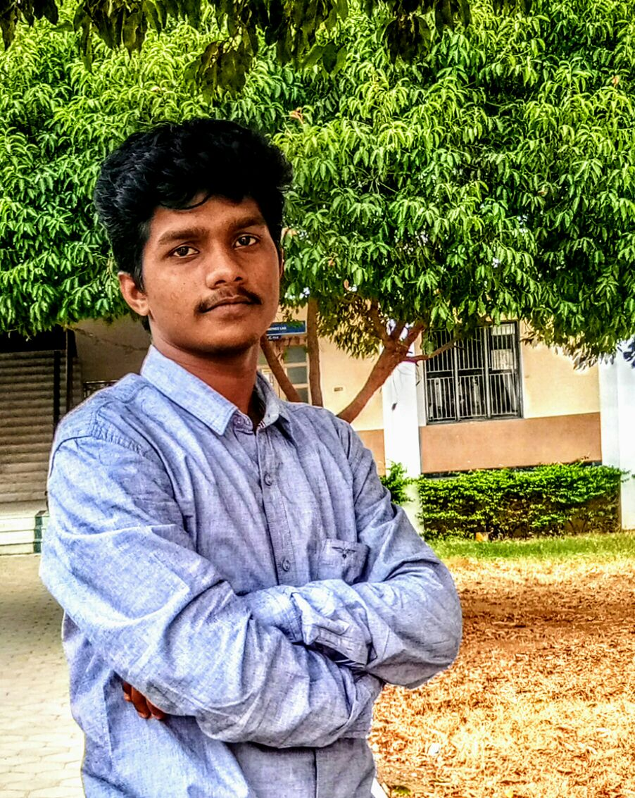

Athi Kesavan Nandhakumar (Chief Executive Officer)

"There are two types of pain in this world.
Pain that hurts you
And
Pain that changes you !"
It is a great pleasure to extend heartfelt greetings to the readers of the India’s one of the youngest and finest techno-firm,Framtid Group Company(FGC). “Our company values lie in the happiness of our employees and appreciation from our customers! As one of the most important driving forces in developing modern society,our companies have become the backbone of the communities they belong to.To build a happy and harmonious society,it is a worthwhile attempt for us to build a happy business.We strive to fully undertake our social responsibility,building a green and sustainable business,leading as an example of a happy business and ultimately achieving the shared vision of “technology”.”